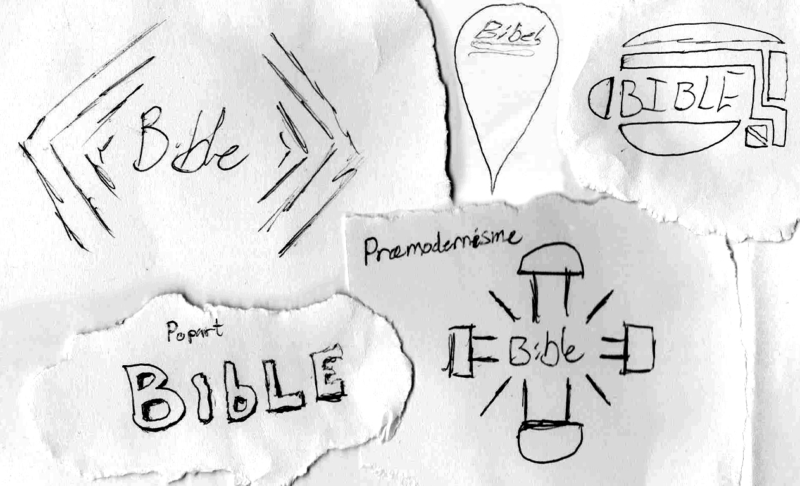
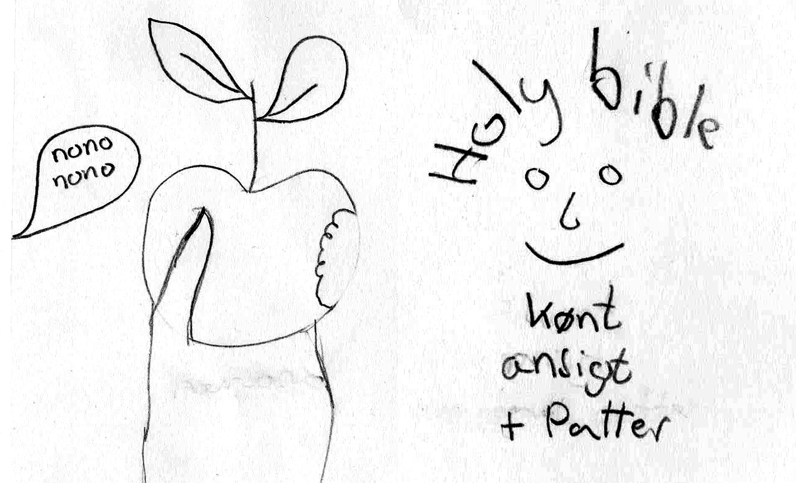

Bibelforsider
Stilhistoriske perioder

Skitser og idéer blev frembragt i samarbejde med en klassekammerat, mens jeg selv stod for udførelsen i Photoshop. Skoleprojekt i Design B på HTX.
-
Proces
-
Kendetegn

Inden vi begyndte at tegne skitser, nedskrev vi et udvalg af stilperiodernes kendetegn, vi ville have med på vores forsider
-
Skitsering
Her ses et udvalg af de skitser, jeg frembragte.
-
Skitsering
To af mine samarbejdpartners skitser.